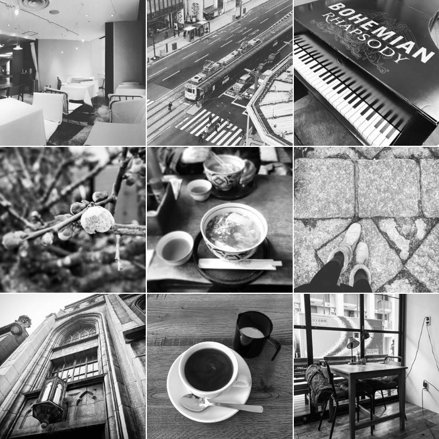
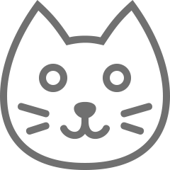
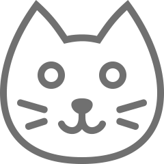

福冨里菜の紹介ページ
Rina Fukutomi

● 自己紹介
広島市安佐南区の出身です。
小学校の時に福岡に住んでいた事もありました。
中学高校と広島の学校を卒業した後、東京の大学で環境デザインを学び、
大学卒業後はハウスメーカーで企画や開発の仕事をしていました。
スクールが始まり約３週間、
毎日ドキドキハラハラしつつとても充実した毎日を送っています。
知識豊な先生方と励ましあえる29期の皆様と一緒に沢山学び、
スキルをしっかりと身につけて就職出来るよう日々努力してゆきたいと思います。
● ニックネーム
福ちゃん が一番多いかな〜？という感じです。
（呼びやすい名前で呼んでください＾＾）
● 私のいろいろ
- マイブーム・・・ゲーム、ねこ動画
- 好きなこと・・・インテリア、美術鑑賞、映画、音楽、写真、植物、カフェ、のんびり
- 得意なこと・・・整理整頓
 

Thanks for your watching